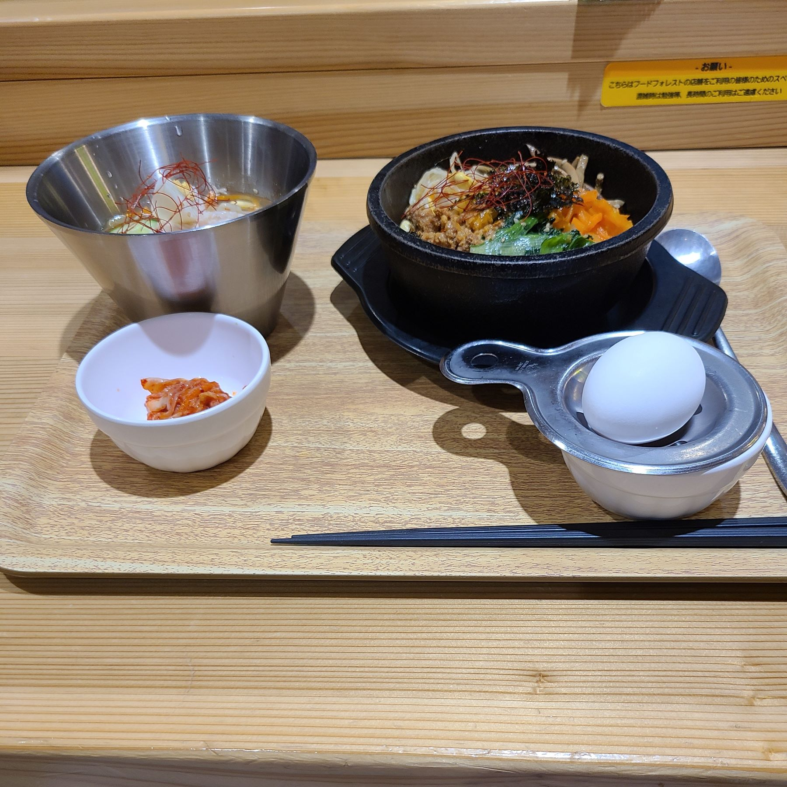

-
20230322

今日は豆乳パックに書かれていた「豆乳坦々春雨」のレシピどうりに作ってみた。
-
20230321

ＷＢＣ日本サヨナラヒット！
村上長らく不調だったけど、この場面で打てて良かった。同じ高校なんですよ。世代は30年以上違うけど。。。 -
20230319
イオンのフードコートで昼食。前から気になっていた韓国料理を注文。ビビンバ&冷麺。小さく見えるのにこれで1090円もした。(-_-;)
-
20230318
実家から高菜が送られてきた。新漬けだね。これで食卓が少し豊かになる。(^_^)
-
20230314

散髪の帰り餃子の王将に行ったら、調味料入れが個別に運ばれてきた。みんな悪さするから。。
-
20230310

今日は朝から「むさしの森珈琲」で贅沢にモーニング。
食べる前に写真撮るつもりだったが、忘れてた～(>_<)
もう、ふわふわのパンケーキ。 -
20230307

今日は病院の帰りに行きつけのラーメン店で昼食です。
LINEお友達になるとトッピングがもらえるので今日はLINE登録しよう。